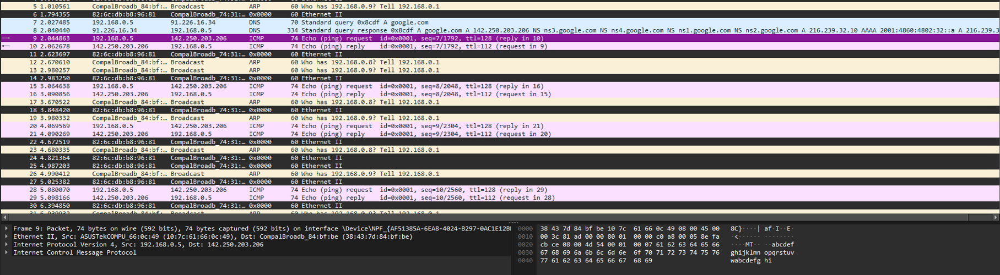
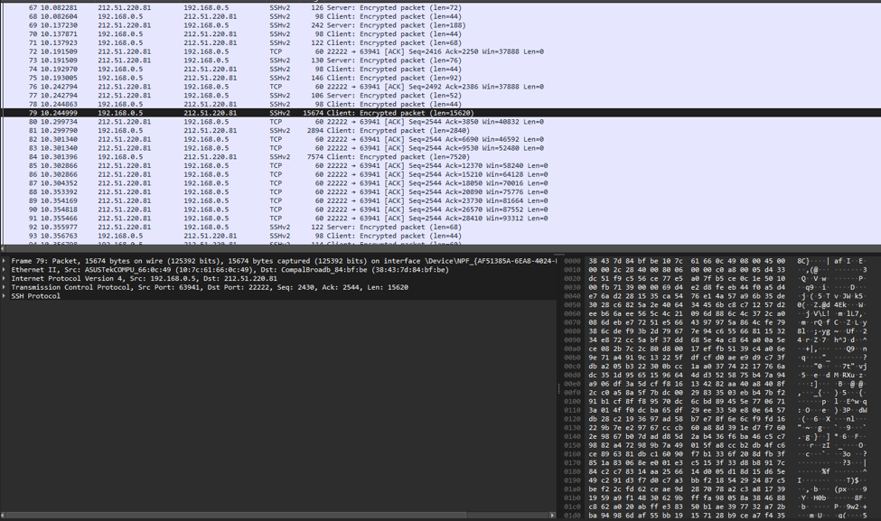
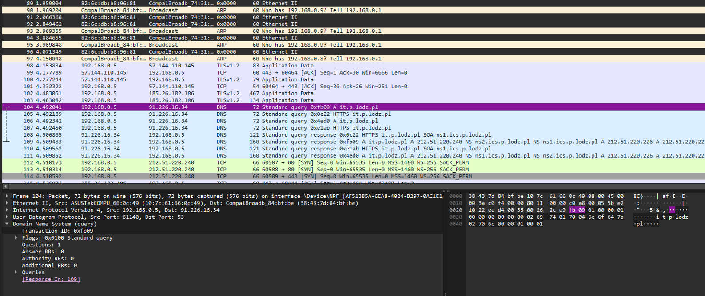
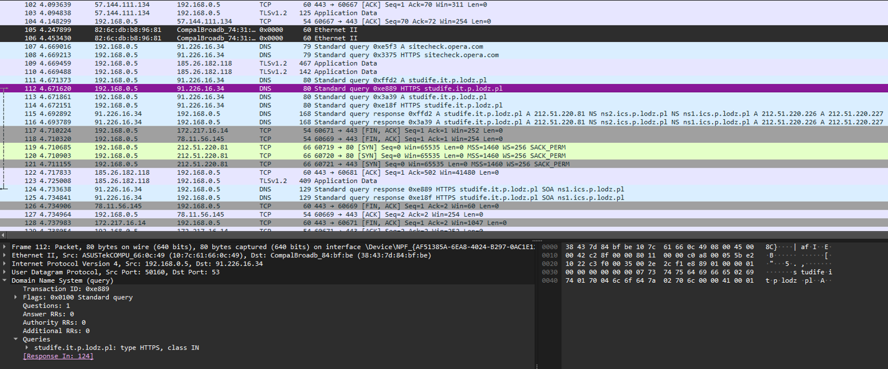

1. Theoretical Part
1.1 OSI model (short overview)
The OSI (Open Systems Interconnection) model, defined by ISO, describes how networked systems communicate by splitting the process into seven layers. Each layer has a specific role in preparing, transmitting and receiving data.
- Physical Layer - Handles the actual physical connection between devices. It transmits raw bits (0s and 1s) over the medium, ensuring synchronization through clock signals, controlling bit rate, and defining network topologies.
- Data Link Layer - Ensures reliable data transfer between directly connected nodes. It organizes data into frames, adds MAC addresses, detects and corrects transmission errors and manages flow control.
- Network Layer - Manages data delivery between devices on different networks. It handles logical addressing (IP addresses) and determines the best route for packet transmission from source to destination.
- Transport Layer - Provides end-to-end communication and reliability. It segments data, assigns port numbers for process-level delivery, ensures correct sequencing, acknowledges successful delivery, and retransmits lost segments if needed.
- Session Layer - Establishes, maintains, and ends communication sessions between devices. It adds checkpoints for synchronization, ensuring recovery in case of data loss.
- Presentation Layer - Translates data into a format the receiving system can understand. It performs data translation (e.g., ASCII to EBCDIC), encryption/decryption for security, and compression to improve transmission efficiency.
- Application Layer - Provides network services directly to users and applications. It enables functions such as file transfer, email, remote login, and directory services for resource access.
1.2 Protocol Data Units (PDU)
| OSI Layer | Protocol Data Unit (PDU) |
|---|---|
| Physical | Bits |
| Data Link | Frames |
| Network | Packets |
| Transport | Segments (TCP) / Datagrams (UDP) |
| Session | Data |
| Presentation | Data |
| Application | Data |
1.3 Protocol assignment
Assigned protocols for each layer (as provided):
- Physical Layer - USB, RS-232, RS-449, IEEE 1394, IEEE 802.11, Bluetooth
- Data Link Layer - SLIP, IEEE 802.11, IEEE 1394, Bluetooth, ARP, L2TP
- Network Layer - IPv4, IPv6, ICMP, IGMP, L2TP
- Transport Layer - TCP, UDP
- Session Layer - NetBIOS
- Presentation Layer - SSL, TLS, MIME
- Application Layer - DHCP, DNS, FTP, HTTP, Telnet, NNTP, SIP, RTP
2. Practical Part
Use the ping command to verify connectivity to google.com. Utilize Wireshark to capture and identify all protocols involved in this communication. Categorize the identified protocols according to the ISO/OSI reference model layers.
- Ethernet II - data link layer
- ARP - data link layer
- ICMP - network layer
- IPv4 - network layer
- DNS - application layer
2.2 Utilize the SCP (Secure Copy Protocol) to upload any image file from your local machine to the main directory on the server at studife.it.p.lodz.pl*. Employ Wireshark to capture and analyze the protocols involved in this data transfer. Classify the detected protocols according to their respective ISO/OSI layers.
Since SCP is secure, we can’t see what exactly is sent and can’t see the protocol itself in Wireshark, however we can see that the client sends to the server some large encrypted packets under the SSHv2 protocol, which probably means that this is our image.
Access the webpage it.p.lodz.pl. Use Wireshark to capture and list all protocols involved in the communication. Assign each protocol to the appropriate layer of the ISO/OSI model.
- Ethernet II - data link layer
- ARP - data link layer
- IPv4 - network layer
- TCP - transport layer
- HTTPS (uses TLSv1.2) - application layer, presentation layer
Access the webpage studife.it.p.lodz.pl. Use Wireshark to capture and list all protocols involved in the communication. Categorize the identified protocols within the ISO/OSI layers
- Ethernet II - data link layer
- ARP - data link layer
- IPv4 - network layer
- TCP - transport layer
- DNS - application layer
- HTTPS (uses TLSv1.2) - application layer, presentation layer